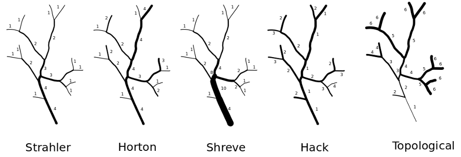

DESCRIPTION
OPTIONS
- -z
- Creates zero-value background instead of NULL. For some reason (like map
algebra calculation) zero-valued background may be required. This flag produces
zero-filled background instead of null (default).
- stream
- Stream network: name of input stream map on which ordering will be performed
produced by r.watershed or r.stream.extract. Because streams network produced by
r.watershed and r.stream.extract may slighty differ in detail it is required to
use both stream and direction map produced by the same module. Stream background
shall have NULL value or zero value.
Background values of NULL are by default produced by r.watershed and
r.stream.extract. If not 0 or NULL use r.mapcalc to
set background values to null.
- dir
- Flow direction: name of input direction map produced by r.watershed or
r.stream.extract. If r.stream.extract output map is used, it only has non-NULL
values in places where streams occur. NULL (nodata) cells are ignored, zero and
negative values are valid direction data if they vary from -8 to 8 (CCW from
East in steps of 45 degrees). Direction map shall be of type CELL values. Region
resolution and map resoultion must be the same.
Also stream network and accumulation maps must have the same
resolution. It is checked by default. If resolutions differ the module informs
about it and stops. Region boundary
and maps boundary may be differ but it may lead to unexpected results.
- table
- Table where stream network topology can be stored. Because r.stream.order is
prepared to work both with r.watershed and r.stream.extract, table by default is
not attached to vector, but if stream network is produced by r.stream.extract it
can be simply added to file using v.db.connect.
See DESCRIPTION for details
- accum
- Flow accumulation (optional, not recommended): name of flow accumulation
file produced by r.watershed or used in r.stream.extract. This map is an option
only if Horton's or Hack's ordering is performed. Normally both Horton and Hack
ordering is calculated on cumulative stream lrngth which is calculated
internaly. Flow accumulation can be used if user want to calculate main stream
as most accumulated stream. Flow accumulation map shall be of DCELL type, as is
by default produced by r.watershed or converted do DCELL with r.mapcalc.
OUTPUTS
At least one output map is required:
- strahler
- Name of Strahler's stream order output map: see notes for detail.
- shreve
- Name of Shreve's stream magnitude output map: see notes for detail.
- horton
- Name of Horton's stream order output map (require accum file): see notes for
detail.
- hack
- Name of Hack's main streams output map : see notes for detail.
- top
- Name of topological dimensions streams output map: see notes for
detail.
Stream ordering example:

Strahler's stream order
Strahler's stream order is a modification of Horton's streams order which fixes
the ambiguity of Horton's ordering.
In Strahler's ordering the main channel is not determined; instead the ordering
is based on the hierarchy of tributaries. The ordering follows these rules:
- if the node has no children, its Strahler order is 1.
- if the node has one and only one tributuary with Strahler greatest order i,
and all other tributaries have order less than i, then the order remains i.
- if the node has two or more tributaries with greatest order i, then the
Strahler order of the node is i + 1.
Strahler's stream ordering starts in initial links which assigns order one. It
proceeds downstream. At every node it verifies that there are at least 2 equal
tributaries with maximum order. If not it continues with highest order, if yes
it increases the node's order by 1 and continues downstream with new order.
Advantages and disadvantages of Strahler's ordering:
Strahler's stream order has a good mathematical background. All catchments with
streams in this context are directed graphs, oriented from the root towards the
leaves. Equivalent definition of the Strahler number of a tree is that it is the
height of the largest complete binary tree that can be homeomorphically embedded
into the given tree; the Strahler number of a node in a tree is equivalent to
the height of the largest complete binary tree that can be embedded below that
node. The disadvantage of that methods is the lack of distinguishing a main
channel which may interfere with the analytical process in highly elongated
catchments
Horton's stream order
Horton's stream order applies to the stream as a whole but not to segments or
links since the order on any channel remains unchanged from source till it
"dies" in the higher order stream or in the outlet of the catchment. The main
segment of the catchment gets the order of the whole catchment, while its
tributaries get the order of their own subcatchments. The main difficulties of
the Horton's order are criteria to be considered to distinguish between "true"
first order segments and extension of higher order segments. That is the reason
why Horton's ordering has rather historical sense and is substituted by the more
unequivocal Strahler's ordering system. There are no natural algorithms to order
stream network according to Horton' paradigm. The algorithm used in
r.stream.order requires to first calculate Strahler's stream order (downstream)
and next recalculate to Horton ordering (upstream). To make a decision about
proper ordering it uses first Strahler ordering, and next, if both branches have
the same orders it uses flow accumulation to choose the actual link. The
algorithm starts with the outlet, where the outlet link is assigned the
corresponding Strahler order. Next it goes upstream and determines links
according to Strahler ordering. If the orders of tributaries differ, the
algorithm proceeds with the channel of highest order, if all orders are the
same, it chooses that one with higher flow length rate or higher catchment area
if accumulation is used. When it reaches the initial channel it goes back to the
last undetermined branch, assign its Strahler order as Horton order and goes
upstream to the next initial links. In that way stream orders remain unchanged
from the point where Horton's order have been determined to the source.
Advantages and disadvantages of Horton's ordering:
The main advantages of Horton's ordering is that it produces natural stream
ordering with main streams and its tributaries. The main disadvantage is that it
requires prior Strahler's ordering. In some cases this may result in unnatural
ordering, where the highest order will be ascribed not to the channel with
higher accumulation but to the channel which leads to the most branched parts of
the the catchment.
Shreve's stream magnitude
That ordering method is similar to Consisted Associated Integers proposed by
Scheidegger. It assigns magnitude of 1 for every initial channel. The magnitude
of the following channel is the sum of magnitudes of its tributaries. The number
of a particular link is the number of initials which contribute to it. To achive
Consisted Associated Integers the result of Shreve's magnitude is to be
multiplied by 2:
r.mapcalc scheidegger=shreve*2
The algorithm is very similar to Strahler's algorithm, it proceeds downstream,
and at every node the stream magnitude is the sum of its tributaries.
Hack's main streams order
This method of ordering calculates main streams of main catchment and every
subcatchments. Main stream of every catchment is set to 1, and consequently all
its tributaries receive order 2. Their tributaries receive order 3 etc. The
order of every stream remains constant up to its initial link. The route of
every main stream is determined according to the maximum flow length value of
particular streams. So the main stream of every subcatchment is the longest
stream or strean with highest accumulation rate if accumulation map is used. In
most cases the main stream is the longest watercourse of the catchment, but in
some cases, when a catchment consists of both rounded and elongated
subcatchments these rules may not be maintained. The algorithm assigns 1 to
every outlets stream and goes upstream according to maximum flow accumulation of
every branch. When it reaches an initial stream it step back to the first
unassigned confluence. It assigns order 2 to unordered tributaries and again
goes upstream to the next initial stream. The process runs until all branches of
all outlets are ordered.
Advantages and disadvantages of main stream ordering:
The biggest advantage of that method is the possibility to compare and analyze
topology upstream, according to main streams. Because all tributaries of main
channel have order of 2, streams can be quickly and easily filtered and its
proprieties and relation to main stream determined. The main disadvantage of
that method is the problem with the comparison of subcatchment topology of the
same order. Subcatchments of the same order may be both highly branched and
widespread in the catchment area and a small subcatchment with only one stream.
Topological dimension streams order
This method of ordering calculates topological distance of every stream from
catchment outlet. The topopological distance is defined as the number of
segments which separates the current segment from the outlet basin
Stream network topology table description
cat integer: category;
streaminteger: stream number, usually equal to cat;
next_stream integer: stream to which contribute current
stream (downstream);
prev_streams; two or more contributing streams (upstream);
strahler integer: Strahler's stream order:
horton integer: Hortons's stream order:
shreve integer: Shreve's stream magnitude;
hack integer: Hack's main streams order;
topo integer: Topological dimension streams order;
length double precision: stream length;
cum_length double precision: length of stream from source;
out_dist double precision: distance of current stream init
from outlet;
stright double precision: length of stream as stright line;
fractal double precision: fractal dimention: stream
length/stright stream length
NOTES
Module can work only if direction map, stream map and region map has same
settings. It is also required that stream map and direction map come from the
same source. For lots of reason this limitation probably cannot be omitted. This
means if stream map comes from r.stream.extract also direction map from
r.stream.extract must be used. If stream network was generated with MFD method
also MFD direction map must be used. Nowadays f direction map comes from
r.stream.extract must be patched by direction map from r.watershed. (with
r.patch).
SEE ALSO
r.watershed,
r.stream.extract,
r.stream.basins,
r.stream.stats,
r.mapcalc,
REFERENCES
- Claps, P., Fiorentino, M., Oliveto, G., (1994), Informational entropy of
fractal river networks, Journal of Hydrology, 187(1-2), 145-156 .
- Hack, J., (1957), Studies of longitudinal stream profiles in Virginia and
Maryland, U.S. Geological Survey Professional Paper, 294-B
- Horton, R. E. (1945), Erosional development of streams and their drainage
basins: hydro-physical approach to quantitative morphology,
Geological Society of America Bulletin 56 (3): 275-370
- Shreve, R., Statistical Law of Stream Numbers, J. Geol., 74,
(1966), 17-37.
- Strahler, A. N. (1952), Hypsometric (area-altitude) analysis of erosional
topology, Geological Society of America Bulletin 63 (11): 1117–1142
- Strahler, A. N. (1957), Quantitative analysis of watershed
geomorphology, Transactions of the American Geophysical Union,
8(6): 913–920.
AUTHORS
Jarek Jasiewicz, Markus Metz
Last changed: $Date$